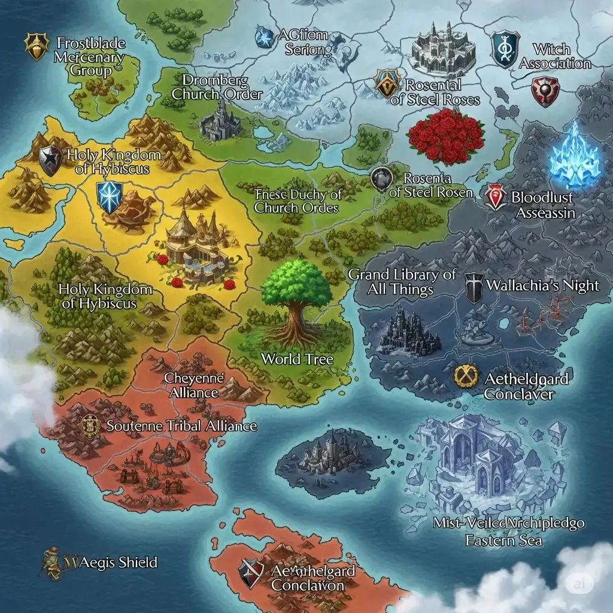

하이비커스 ↔ 로젠탈
왕국의 존속과 공국의 독립. 아발론 강 너머 두 기사단이 대치한다.
국경은 흔들리고 소문은 오간다. 세계수 여관에는 언제나 새로운 이야기가 모인다.

지도 크게 보기 ↗대륙 중앙, 사람들이 모여 이야기를 나누는 여관. 낯선 여행자는 이곳에서 각국의 소식과 인물들의 이야기를 듣는다.
여관주인 피아가 다가온다. 그는 대륙의 정세와 사람들에 대해 무엇이 궁금한지 묻는다.
세계수 여관에서 시작하기 ↗왕국의 존속과 공국의 독립. 아발론 강 너머 두 기사단이 대치한다.
숲을 지키려는 이들과 대륙을 정원으로 바꾸려는 이들의 대립.
봉인과 비밀을 둘러싸고 충돌하는 마녀들과 암살자 길드.
국가와 종교, 암살자 길드부터 용병단과 해적단까지. 각자의 신념과 이해가 교차한다.
업로드된 인물 초상화와 원문 인물 설정을 대조해 정리한 기록들.
인물 설명은 제공된 원본 전문·로어북 기준이며, 핵심 반전이 담긴 추가 기록은 스포일러 해제 시에만 표시돼.
세계수를 중심으로 펼쳐지는 대륙의 주요 지역과 거점.
거리와 방향은 원본 설정에 적힌 값이야. 지도 이미지의 비율이나 실제 지형의 축척을 추측해 보정하지 않았어.
세력 간의 전쟁과 변화, 현재 대륙에서 벌어지는 사건들.
세계관의 핵심 반전과 숨겨진 정체를 다루는 비밀 기록실.
마녀협회의 진짜 목적, 장미교단의 비밀, 일부 인물의 숨겨진 정체 등 플레이 중 밝혀질 수 있는 설정을 포함해. 기본적으로 내용은 잠겨 있으며, 직접 동의한 방문자만 볼 수 있어.
여관의 문을 열고, 대륙의 소문을 직접 확인해 보자.